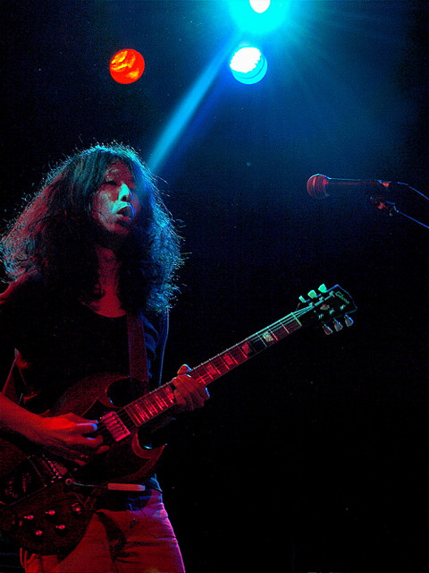

ゆらゆら帝国というバンド名は、結成時にバンド名を決める際、いくつか挙げた候補のどれ
もピンと来ず、最もましだったものを選んだという程度で深い理由はない。
メジャーデビューアルバムの『3×3×3』はリリースされた当時、CORNELIUSの小山田圭吾
により音楽雑誌での企画“年間ベスト1アルバム”に選ばれた。坂本は「（小山田に）年間ベス
ト1に選んでもらって、それから周りの見る目が変わった」と後のインタビューで語ってい
る。
ライブにおける特徴として、MCがほとんどない、アンコールがないといったことが挙げられ
る。坂本はギターを弾きながら体を激しく動かし飛び上がることもある一方で、亀川はほぼ
直立不動を保ち、大振りなアクションはまったく行わない。MCは、坂本が「どうも」「あと
1曲です」「さよなら」「ありがと」「まぁまぁまぁ」などと言うだけで、まとまった事を喋
ることはほとんどなく、他の二人は全く喋らない。また、観客からの掛け声に応じることも
一切しない。
国内のフェスの参加のほか、2005年のレーベル移籍後はヨーロッパやアメリカでのライブ敢
行や台湾のフェス出演など、日本国外での活動も活発に行っていた。
2010年3月31日、ウェブサイトにて解散を発表し、その理由に｢完全にできあがってしまっ
た｣ことを挙げた。
基本情報
ゆらゆら帝国
出身地:
ジャンル:
オルタナティヴ・ロック、
サイケデリック・ロック、
インディー・ロック、
ガレージ・ロック
活動期間:
レーベル:
ミディ（1998年 - 2005年）
ソニー・ミュージックアソシエイ
テッドレコーズ（2005年 - 2010年）
旧メンバー:
坂本慎太郎 （ボーカル・ギター）
亀川千代 （ベース）
柴田一郎 （ドラムス）
(途中脱退者は#旧メンバーを参照)

「
」
坂本慎太郎